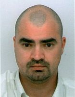

PORTELAS Michaël Manuel
Réseaux et Systèmes Informatiques
Expériences Professionnelles
- 09/2014 – À ce jour : Auto-entrepreneur - Administration système et réseau. Maintenance système et réseau informatique.
- 05/2014 – 08/2014 : Administrateur Réseaux chez Happy Technologies.
- 01/2012 – 31/12/2012 : Technicien en maintenance et gestion de projets informatique chez BMS-UPSA (Bristol Mayers Squibb).
- 03/2010 – 12/2011 : Technicien en maintenance et formateur chez help info service.
- 05/2007 - 03/2008 : Technicien en maintenance et formateur au Collège Aliénor d'Aquitaine.
- 12/2006 - 12/2006 : Formateur informatique chez Adhara informatique.
- 07/2006 - 12/2006 : Technicien en maintenance et Formateur dans diverses agences intérimaire.
Formations
- 2013-2014 : Analyste Programmeur, Formation Continue à l’Exia-Cesi de Blanquefort.
-
2005 : AFPA de Brive la Gaillarde
- Habilitation Électrique
- Titre Professionnel d’A.T.I.C
- Certificat de navigation Internet
Compétences Complémentaires
- Virtualisation : VMware Esxi, Proxmox, Hyper-V.
- Bureautique : Gestion avancé (Word, Excel, Powerpoint, Office365).
- Dévellopement : Sql – TSql – Php – C – Java.
- Système : Windows – Unix
- Réseaux :
Langues-Permis
- Langues :
- Permis :
- A - Motos
- B - Voitures
- C - Camions <= 26t